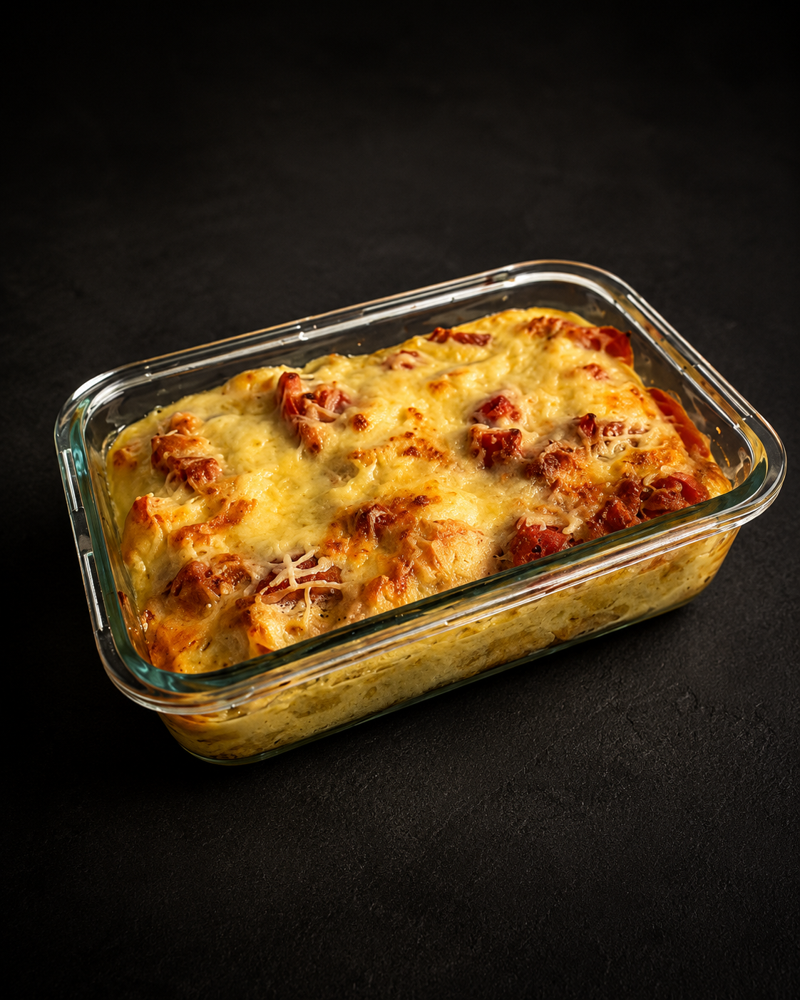

Gratin poulet, pommes de terre & mozzarella

Ingrédients
- 400 g de pommes de terre
- 150 g de blanc de poulet
- 200 g de tomate
- 2 œufs
- 50 g de mozzarella râpée
Les quantités peuvent facilement être divisées ou adaptées selon votre faim. La recette complète est particulièrement rassasiante.
Préparation
- Préchauffer le four à 180°C.
- Cuire les pommes de terre jusqu'à ce qu'elles soient bien tendres.
- Placer les pommes de terre cuites dans un plat allant au four puis les écraser afin de former une couche uniforme.
- Découper le blanc de poulet en petits morceaux et la tomate en dés.
- Dans un récipient, mélanger le poulet, la tomate, les œufs et la mozzarella râpée.
- Répartir le mélange uniformément sur la couche de pommes de terre écrasées.
- Enfourner à 180°C pendant environ 20 à 25 minutes, jusqu'à ce que le poulet et les œufs soient bien cuits et que le dessus soit légèrement gratiné.
- Servir chaud.
Valeurs nutritionnelles (approx.)
Pour la recette entière : 850 kcal • 82 g protéines • 26 g lipides • 72 g glucides • 10 g fibres